THE EMERGENCE · 使い方ガイド
専門用語はできるだけ使わず、出てきた場合はその場で言い換えています。まずは下の「これは何か」から読んでみてください。
これは、本物のハエ（キイロショウジョウバエ）の脳の配線図をもとに作られた、脳の動きを再現するシミュレーターです。実際に顕微鏡で調べられた、約13万個の神経細胞と、その270万本のつながりのデータをそのまま使っています。
ただし、あなたが直接ハエを歩かせたりジャンプさせたりする操作はできません。あなたが動かせるのは、「ハエの周りの世界」（気温・食べ物のにおい・何かが近づいてくる感覚、など）と、「ハエの脳そのもの」（特定の神経細胞を刺激したり黙らせたりする）の2つだけです。ハエがどう動くかは、その結果として脳が計算した通りに、自動的に決まります。
「You don't control the creature. You control its world and its brain.」
（あなたが操作するのは生き物そのものではなく、その世界と、その脳です。）
言い換えると、これは脳の"シミュレーションゲーム"です。世界に何かを起こす → 脳の中で信号が伝わっていく様子が見える → その結果、ハエがどんな行動を選ぶかが分かる、という一連の流れをそのまま観察できます。
起動すると、下のような1枚の画面が表示されます。大きく4つのエリアに分かれています。
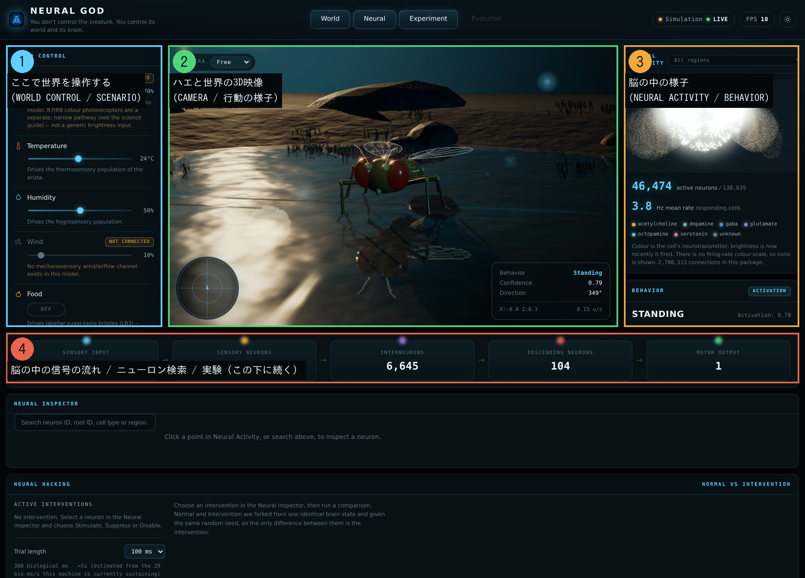
画面の一番上には「World / Neural / Experiment / Evolution」という4つのタブが並んでいますが、これは見出しのようなもので、押しても画面は切り替わりません。今説明した①〜④の内容が、すべてこの1枚のページの中にすでに収まっています（詳しくは最後の「正直にお伝えする注意点」をご覧ください）。
スライダーやボタンを動かすと、ハエの「感覚」に実際に刺激が送られます。反応は本物のシミュレーション結果で、見た目だけの演出ではありません。
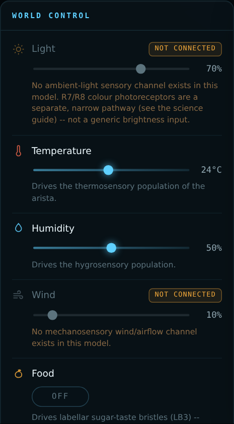
動かしてもハエの脳には何も伝わりません。理由は、このハエの脳のデータの中に「明るさ全体を感じる」ための神経回路が見つかっていないためです（色を感じる非常に狭い回路は別に存在しますが、それとは違います）。存在しない反応をでっち上げるのではなく、正直に「つながっていません」と表示しています。
触角にある温度を感じる神経細胞を刺激します。上げるほど、その神経回路の反応が強くなります。
湿度を感じる神経細胞を刺激します。
Lightと同じ理由で、今のところハエの脳には影響しません。風を感じるための神経回路が、このデータの中には見つかっていないためです。
ONにすると、口先が甘いものに直接触れたときの神経細胞が刺激されます。ハエの「食べようとする行動」に直結する、実験でもよく使われる刺激です。ページ下の BEHAVIOR パネルで「Extending proboscis（口を伸ばす）」に変わるのが見えるはずです。
においを感じる神経細胞を刺激します。Foodが「直接口に触れる」刺激なのに対して、こちらは「遠くからにおいで気づく」刺激です。
仲間の匂い（フェロモン）を感じる神経回路を刺激します。求愛行動に関わることがよく知られている経路です。
「何かがどんどん近づいてくる」ように見える視覚刺激を再現します。ハエが危険から逃げる（Escape）反応に強く関わる回路が刺激されます。
これをONにしても脳には何も伝わりません。「敵」だけを専門に感じる神経回路はこのデータには存在しないためです。ONにすると3D画面に見た目のオブジェクトが表示されるだけで、上のVisual stimulusとは別物です。
目のまわりの毛（体の表面のセンサー）に何かが触れたときの神経細胞を刺激します。グルーミング（毛づくろい）行動に関係します。
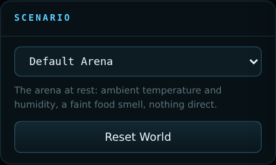
上の WORLD CONTROL のスライダーを1つずつ動かす代わりに、よくある状況をまとめて再現できるプリセットです。中身は「Default Arena（何もない状態）」「Foraging（採餌中）」「Threat（何かが迫ってくる）」「Courtship（求愛）」「Grooming（毛づくろい）」の5つ。選ぶと、その状況に合ったスライダー・ボタンが自動的にセットされます。特別な処理をしているわけではなく、上のスライダーを手で動かすのとまったく同じ経路で反映されます。
「Reset World」ボタンを押すと、脳の状態（それまでに溜まっていた信号など）と、後述する脳への介入がすべてリセットされ、まっさらな状態からやり直せます。
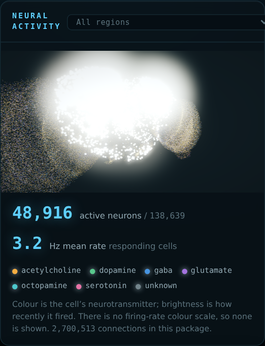
光っている粒の1つ1つが、実際の神経細胞（本物のデータに基づく、約13万個のうちの1つ）です。色は神経細胞の種類（信号を伝えるときに使う化学物質の違い）を表し、明るさは、その細胞が「最近信号を出したかどうか」を表します。信号を出した瞬間は明るく光り、時間が経つとだんだん暗くなっていきます。
数字の「active neurons（活動中の神経細胞）」と「Hz mean rate（平均の発火レート）」は、どちらも今まさにこのページの中で計算されている実測値です。Hz は「1秒間に何回信号を出しているか」を表す単位で、あらかじめ用意された台本の数字ではありません。右上のドロップダウンで、脳の部位（視覚を処理する部分、におい・味を扱う部分など）ごとに絞り込んで見ることもできます。
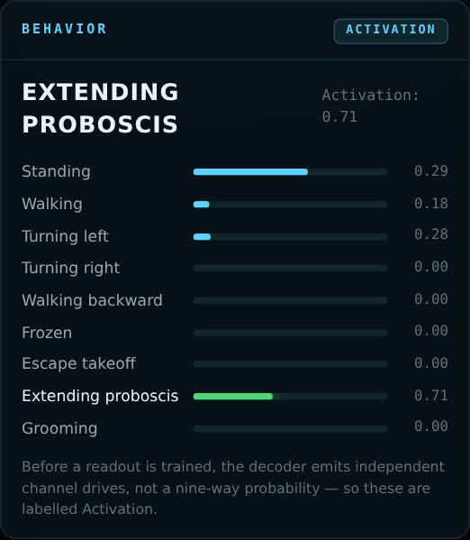
脳の中の信号を、「歩く」「止まる」「口を伸ばす」など9種類の行動に変換して表示するパネルです。それぞれの行動に0.00〜1.00の強さがつき、一番強いものが大きな文字で表示されます（上の画像では、Foodをオンにした結果「Extending proboscis（口を伸ばす）」が最も強く出ています）。
右上に出ている「Activation」というラベルは、「まだ学習（トレーニング）していない段階なので、9つの行動それぞれについて独立に強さを計算しています」という意味です。9つの数字を全部足しても1にはなりません。仮に将来トレーニング済みのモデルに切り替わった場合は、ここが「Confidence（確信度）」というラベルに変わり、9つの行動から1つを選ぶ確率として表示されます。
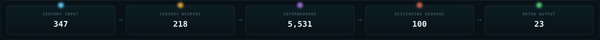
信号が脳の中を流れていく、大まかな5段階を表しています。
気になる神経細胞を1つ選んで、じっくり観察できる場所です。中央の光る点をクリックするか、上の検索ボックスに番号・名前・部位名を入力して選びます。
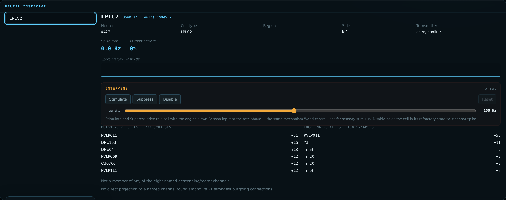
選ぶと、次のことが分かります。
ここに表示される「INTERVENE」という枠が、次に説明する NEURAL HACKING の入り口です。
NEURAL INSPECTOR で選んだ1つの神経細胞に対して、直接手を加えて（介入して）、脳がどう変わるかを試せる場所です。
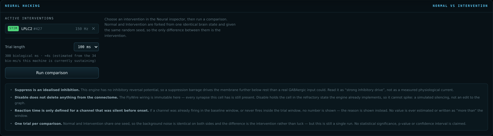
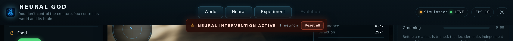
NEURAL INSPECTOR の中の「INTERVENE」に3つのボタンがあります。
どれか1つでも押すと、画面上部に赤いバナー「⚠ NEURAL INTERVENTION ACTIVE」が表示され、今どの細胞にどんな介入をしているかが一目で分かるようになります。「Reset all」でいつでも元通りにできます。
介入をセットした状態で「Run comparison」を押すと、「何もしなかった場合（Normal）」と「今の介入をした場合（Intervention）」を、同じ条件で並べて比較できます。トライアルの長さ（50 / 100 / 200ミリ秒）を選んで実行すると、次のことが数字で分かります。
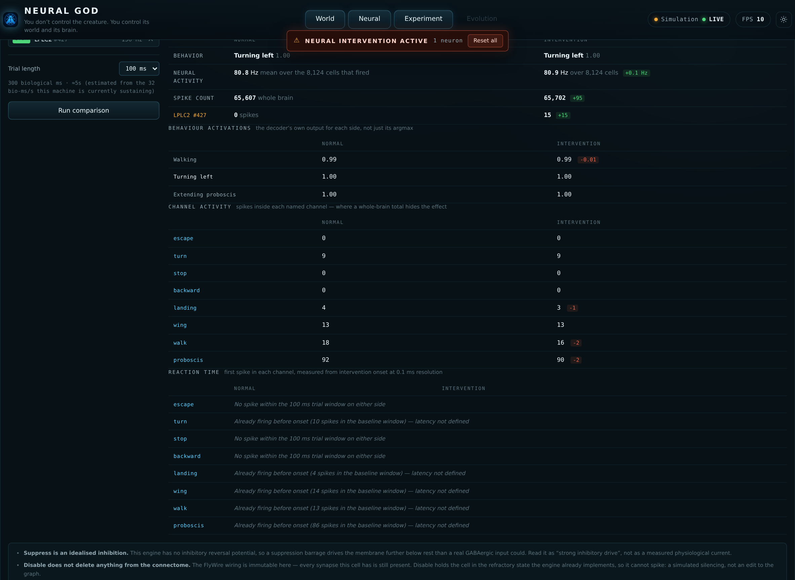
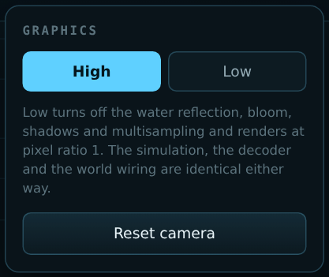
画面右上の歯車アイコンから、見た目の描画品質を「High」と「Low」で切り替えられます。Lowにすると、水面に映る反射、光のにじみ（ブルーム）、影、輪郭のなめらかさなどの見た目の演出だけがオフになり、動作が軽くなります。シミュレーションの計算結果（発火・行動の判定など）はHigh/Lowでまったく同じです。お使いのパソコンが重いと感じたら、Lowに切り替えてみてください。
同じポップアップの「Reset camera」ボタンで、中央の3D映像のカメラ位置を初期状態に戻せます。
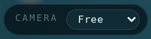
迷ったら、この順番で触ってみてください。